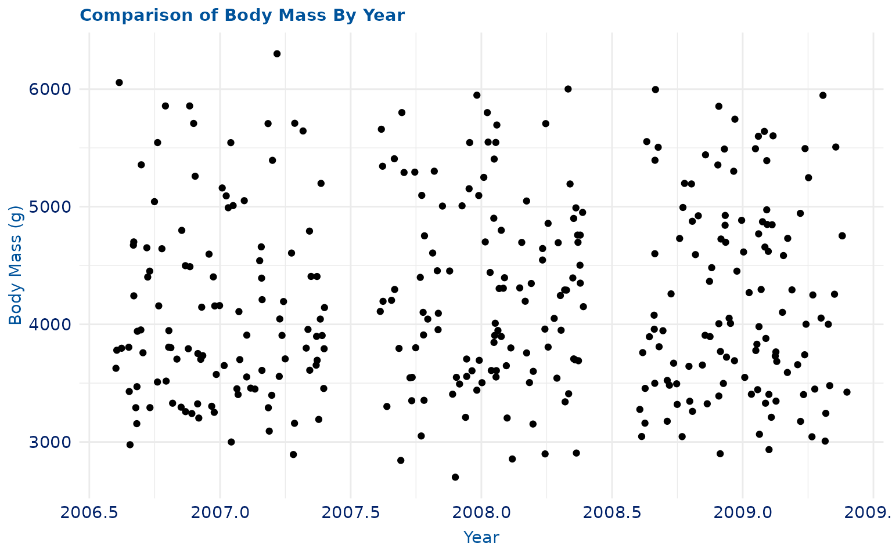

This vignette is intended to demonstrate the breadth of
theme_duke() and its various applications. Similar to the
other functions within the theme(), this function can be
applied to all visualizations made with ggplot2.
Plot Examples
For these visualizations, we will use the penguins
dataset from the palmerpenguins package.
Scatter Plot
p <- ggplot(penguins, aes(bill_length_mm, flipper_length_mm)) +
geom_point(aes(colour = species)) +
labs(
title = "Bill Length vs. Flipper Length",
caption = "There are three different species of penguins.",
x = "Bill Length (mm)",
y = "Flipper Length (mm)"
)
p +
theme_duke()
Bar Plot
p <- ggplot(penguins, aes(species)) +
geom_bar(aes(fill = species)) +
labs(
title = "Species Count",
caption = "There are three different species of penguins.",
x = "Species",
y = "Count"
)
p +
theme_duke()
Histogram
p <- ggplot(penguins, aes(body_mass_g)) +
geom_histogram(aes(fill = species)) +
labs(
title = "Distribution of Penguin Body Mass",
caption = "There are three different species of penguins.",
x = "Body Mass (g)",
y = "Count"
)
p +
theme_duke()
#> `stat_bin()` using `bins = 30`. Pick better value with `binwidth`.
Box Plot
p <- ggplot(penguins, aes(sex, body_mass_g)) +
geom_boxplot() +
labs(
title = "Comparison of Body Mass By Sex",
x = "Sex",
y = "Body Mass (g)"
)
p +
theme_duke()
#> Warning: Removed 2 rows containing non-finite values (`stat_boxplot()`).
Density Plot
p <- ggplot(penguins, aes(bill_depth_mm)) +
geom_density() +
labs(
title = "Density of Penguin Bill Depth",
x = "Bill Depth (mm)",
y = "Densiy"
)
p +
theme_duke()
Jitter Plot
p <- ggplot(penguins, aes(year, body_mass_g)) +
geom_jitter() +
labs(
title = "Comparison of Body Mass By Year",
x = "Year",
y = "Body Mass (g)"
)
p +
theme_duke()